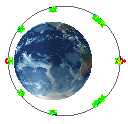

With the commands available in NX Space Systems Thermal, you can define the:
Orbit, attitude, and articulations of a spacecraft.
Orbital maneuvers.
The celestial body being orbited or specify a body with particular conditions.
The software:
Creates an explicit model of the celestial body to calculate radiative heating for each element in the spacecraft.
Uses the view factors (calculated when you define a Radiation simulation object) to determine the distribution and absorption of radiative flux.
Models eclipses by controlling the direct solar incidence. Heating effects due to planet radiation is still considered.
Models the specular and transmissive effects for different spectra.
Computes element shadowing to an accuracy that you specify.
After you define the orbit you can use the Orbit Visualizer command to display an animation of the spacecraft in the simulated orbit.
You can define multiple orbital maneuvers (slews) or different orbit sections in the same simulation, however in the Orbit Visualizer only the parent orbit will be displayed.
You define orbital maneuvers by defining one parent orbit and multiple child orbits. You must ensure that the orbit sections of each orbit match in time and space.
